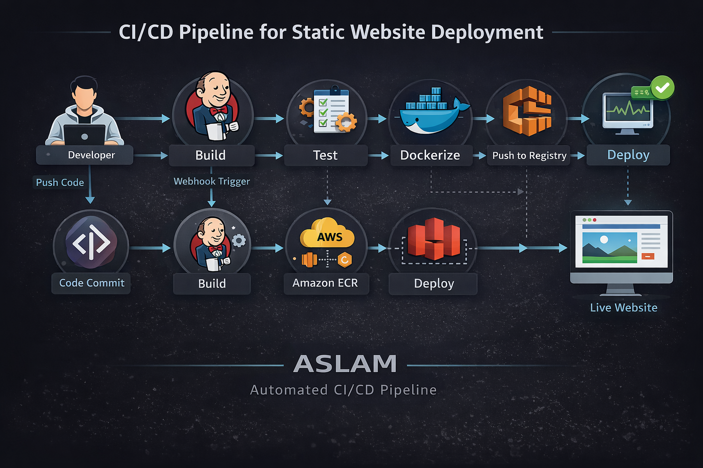

This deployment
- Build
- …
- Commit
- …
- Branch
- …
- Built
- …
- Health
- checking…
- Latency
- –
Pipeline
- CheckoutGit
- LintHadolint · ShellCheck
- BuildDocker multi-stage
- Smoke test/healthz · headers
- ScanTrivy CVEs
- PushAWS ECR
- DeployHealth-gated + rollback
Stack
